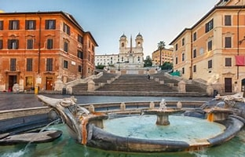
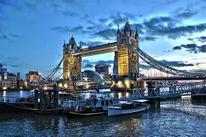
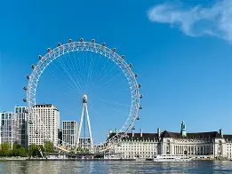
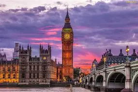

Londyn (ang. London) – stolica i największe miasto Anglii i Wielkiej Brytanii, położone w południowo-wschodniej części kraju, nad Tamizą. Jest trzecim co do wielkości miastem Europy, po Moskwie i Stambule, a jednocześnie jednym z większych miast świata zarówno w skali samego miasta, jak i całej aglomeracji. Liczba mieszkańców Londynu (w granicach tzw. Wielkiego Londynu) wynosi ok. 8,982 mln (2019) na obszarze 1572 km²; cały zaś obszar metropolitalny Londynu w 2018 r. liczył prawie 12,5 milionów mieszkańców[2]. Około 20% mieszkańców pochodzi z Azji, Afryki i Karaibów.

London Bridge, znany również jako London Bridge Tower, to most nad Tamizą w centralnym Londynie, łączący City of London na północnym brzegu rzeki z dzielnicą Southwark na południu. Obecna stalowo-betonowa konstrukcja wzniesiona została w 1973 roku i zastąpiła XIX-wieczny kamienny most łukowy. Wcześniej istniało tu kilka innych konstrukcji, najwcześniejsza wzniesiona w I wieku przez Rzymian.

London Eye (Londyńskie Oko), ukończone w 1999 r., nazywane również Millennium Wheel (Koło Milenijne) – koło obserwacyjne (diabelski młyn) znajdujące się w dzielnicy Lambeth w Londynie, na południowym brzegu Tamizy, między mostami Westminster i Hungerford. Zostało zaprojektowane przez Davida Marksa, Julię Barfield, Malcolma Cooka, Marka Sparrowhawka, Stevena Chiltona i Nica Baileya. Koło ma wysokość 135 metrów, a jego pełny obrót trwa około 30 minut[1][a]. Na kole znajdują się 32 klimatyzowane kapsuły pasażerskie. Niewielka prędkość liniowa tych kabin (ok. 10 in/s) pozwala na zabieranie i wysadzenie pasażerów bez zatrzymywania koła.

Big Ben – zwyczajowa nazwa wieży zegarowej Elizabeth Tower w Londynie w Wielkiej Brytanii. Nazwa początkowo odnosiła się do dzwonu ze St. Stephen’s Tower (z ang. wieża św. Szczepana), zwanej również The Clock Tower (Wieża Zegarowa), należącej do Pałacu Westminsterskiego. Obecnie nazwa Big Ben odnosi się często zarówno do dzwonu, jak i zegara oraz samej wieży. 12 września 2012 roku wieża została oficjalnie nazwana Elizabeth Tower, dla uhonorowania 60-letniego panowania Elżbiety II.